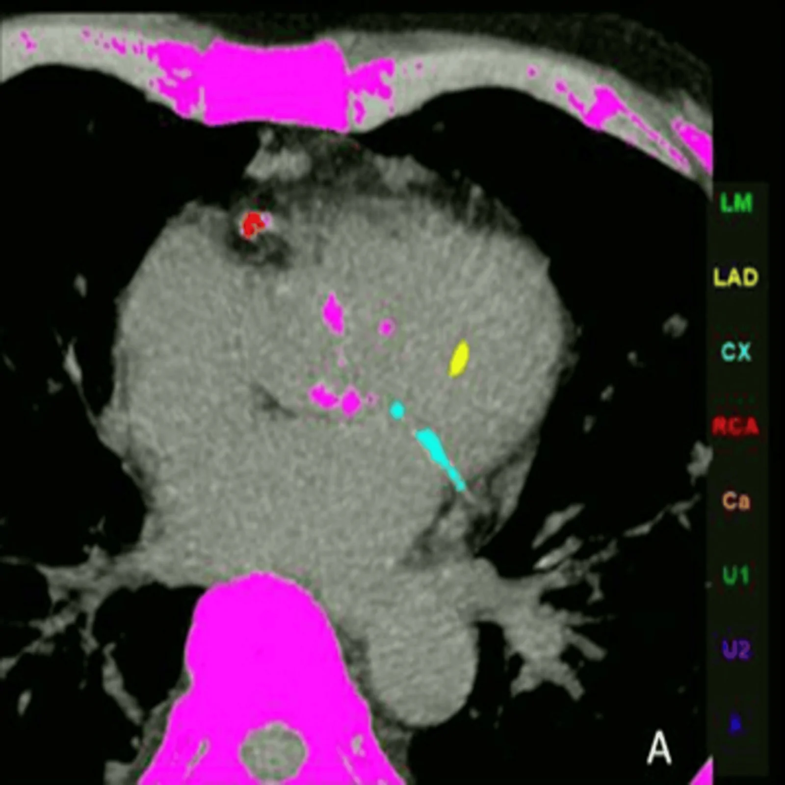

810 — Vành & CAD-RADS 2.0: Agatston, hẹp & mảng nguy cơ / Coronary CTA
Tags: pattern:hep-vanh vung:vanh score:CAD-RADS protocol:CTA-vanh
Mức chắc chắn (certainty): tổng hợp y văn (literature synthesis) — nhóm tự biên từ y văn mở, chưa gắn ca nguyên văn đơn lẻ.
1. Tổng quan — canxi là gánh nặng, hẹp là mức độ, mảng mềm là nguy cơ
- Vôi hóa (Agatston: 0 / 1–99 / 100–299 / ≥ 300) = xơ vữa tích lũy — TẠI SAO Agatston 0 vẫn có thể nhồi máu: mảng mềm không vôi mới là thủ phạm vỡ (đặc biệt người trẻ!).
- Hẹp CAD-RADS 2.0 (0 / 1: 1–24% / 2: 25–49% / 3: 50–69% / 4A-4B: 70–99% / 5: 100%) + P1–P4 (gánh mảng) — TẠI SAO tách hẹp và mảng: hẹp quyết định tưới máu, mảng quyết định phòng ngừa.
- 4 dấu HRP (tỷ trọng thấp < 30 HU + tái cấu trúc > 1,1 + vôi lấm tấm + napkin-ring) — TẠI SAO vỡ: lõi hoại tử lớn + vỏ mỏng + viêm.
2. Gamut đau ngực (Gamut)
- Agatston 0 + không hẹp: CAD-RADS 0 — phòng ngừa (nhưng đừng quên mảng mềm người trẻ!).
- Hẹp 50–69% + HRP: CAD-RADS 3 + HRP — chức năng (FFR-CT/tưới máu) + statin mạnh.
- Hẹp ≥ 70% / thân chung trái: CAD-RADS 4–5 — thông tim can thiệp/bắc cầu.
- Blooming vôi/stent giả hẹp: đọc quá mức — IVUS/OCT khi nghi ngờ.
3. Bảng so sánh phân biệt (ma trận đối chiếu)
| Thực thể (entity) | Hình ảnh điển hình | Chốt vào (rule-in) | Chốt loại (rule-out) | Gợi ý xác nhận |
|---|---|---|---|---|
| CAD-RADS 0–2 | Không hẹp/hẹp < 50% + Agatston thấp | Không hẹp đáng kể | HRP (+) → tăng cường | Phòng ngừa + statin |
| CAD-RADS 3 + HRP | 50–69% + < 30 HU/napkin-ring | HRP = nguy cơ vỡ | Không HRP → theo dõi | FFR-CT + statin mạnh |
| CAD-RADS 4–5 | ≥ 70% / tắc / thân chung | Hẹp nặng + triệu chứng | Blooming → kiểm tra lại | Thông tim/bắc cầu |
| Giả hẹp | Blooming vôi/stent + cầu cơ tâm thu | Vôi nặng/stent + chỉ tâm thu | Tâm trương vẫn hẹp → thật | IVUS/kiểm tra 2 thì |

Tính Agatston theo nhánh (LM/LAD/CX/RCA). Nguồn: Khanduri et al., Cureus 2026 Fig. 1, CC BY 4.0.4. Protocol CTA vành
- CTA vành ECG-gating + chẹn beta + nitro + Agatston khi đau ngực ổn định; nhịp đều mới gating tốt (loạn nhịp = stair-step!).
flowchart TD
A[Đau ngực ổn định] --> B{CTA hẹp?}
B -->|0-2| C[Phòng ngừa]
B -->|3 + HRP| D[FFR-CT + statin]
B -->|4-5| E[Thông tim]
5. Cạm bẫy
- Blooming vôi/stent đọc quá hẹp — cửa sổ hẹp + IVUS khi nghi ngờ.
- Cầu cơ tâm thu tưởng hẹp cố định — so sánh tâm thu-trương.
- Agatston 0 = miễn dịch ở người trẻ/hút thuốc — mảng mềm không vôi vẫn vỡ!
6. Tự lượng giá — Blind Quiz
Ca 1 — Đau ngực + CTA vôi hóa đa nhánh. Đọc ảnh mã màu.
- Hỏi: tính gì từ ảnh này? Quyết định gì tiếp theo?
Bấm để hiện đáp án
- Dấu hiệu (findings): mảng vôi đa nhánh mã màu theo LAD/RCA.
- Chẩn đoán (diagnosis): điểm Agatston + CAD-RADS/P — phân tầng (0/1–99/100–299/≥ 300) + đánh giá hẹp/HRP quyết định phòng ngừa hay can thiệp.
- Nguồn: Khanduri et al., Fig. 1, CC BY 4.0.
Ca 2 — Hẹp 60% LAD + napkin-ring + RR 1,3: CAD-RADS mấy? Bước tiếp? (Bảng mục 3.)
Bấm để hiện đáp án
- CAD-RADS 3 + HRP: FFR-CT/tưới máu + statin mạnh (không thông tim ngay).
Bài liên quan chéo
- 800 – Tổng quan Tim mạch
- 070 – PE & ĐMC (CTA ngực)
- 820 – MRI tim (sống còn cơ tim)
Không dùng để chẩn đoán độc lập khi chưa có người hướng dẫn.